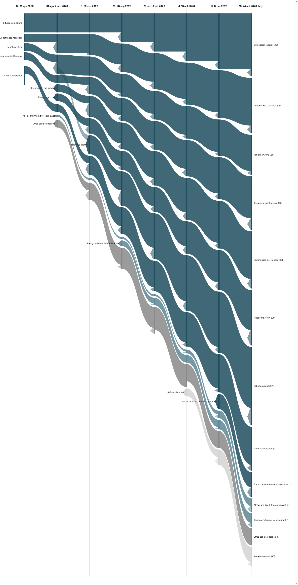

|
Vigilancia Tecnológica Competitiva
Señales del cambio
Semana 8 · 26 de octubre de 2026
La semana con más despidos atribuidos explícitamente a la IA del registro hasta ahora golpea a banca y medios, mientras expertos externos empiezan a cuestionar en público el propio informe de Anthropic sobre cómo la IA cambia su plantilla — y nace una señal nueva de resistencia directa y física a los robots.
|
Resumen ejecutivo
172 observaciones nuevas procesadas entre el 18 y el 24 de octubre (la base histórica no registró observaciones adicionales en el periodo). Por volumen, esta edición prioriza 53 observaciones de mayor relevancia estratégica; otras 8 resultaron ser re-cobertura del mismo hecho ya contado y se excluyen explícitamente. El registro de señales crece de 23 a 24: 9 fuertes (sin cambios de composición), 4 débiles con potencial de escalar, 2 débiles activas sin tendencia alcista por ahora, y 9 señales en estado latente — dos más que la semana pasada, ya más de la mitad de la familia de señales débiles.
Los tres movimientos más relevantes de la semana:
- National Australia Bank, Barclays y American Express recortan miles de puestos citando expansión de IA, y el nuevo propietario del Telegraph promete convertirlo en un negocio "impulsado por IA" tras despedir a 100 empleados — la semana con más despidos explícitamente atribuidos a la IA del registro hasta ahora.
- The Guardian reporta que expertos externos cuestionan la solidez metodológica del informe de Anthropic sobre cómo la IA ha cambiado el trabajo dentro de su propia empresa — el primer escrutinio público serio de un autoinforme que hasta ahora se citaba sin cuestionar.
- Nace una señal débil nueva, resistencia directa a robots: una profesora jubilada es arrestada en Filadelfia por bloquear robots de reparto, y más de 1.500 empleados de Boston Dynamics presionan para cancelar la venta de "perros robot" a ICE.
|
|
Principales insights
|
|
Señales de la semana
|
|
Gráfico de evolución
Flujo de las 9 señales macro y las dos señales débiles más notorias, a lo largo de ocho periodos. El grosor de cada banda es proporcional al número de evidencias que la respaldan. La banda de señales latentes (gris claro) sigue creciendo esta edición.

|
|
Descripción textual del gráfico (por si no se renderiza la imagen): De izquierda a derecha, ocho columnas temporales desde 17–31 ago 2026 hasta 18–24 oct 2026 (hoy). Las nueve señales macro llegan a la última columna con anchos distintos según su evidencia acumulada: Robótica global sigue siendo, con mucha diferencia, la más gruesa (41), seguida de Bifurcación laboral (33), Redefinición del trabajo (30), Gobernanza rebasada y Riesgo macro IA (29 cada una), Respuesta institucional (28), IA en contratación (23), Robótica China (21), y Entrenamiento humano de robots, que casi duplica su evidencia en su segunda edición (13, frente a 8 la semana pasada). De las señales débiles, se muestran como bandas propias las dos con más evidencia: AI Tax and Work Protection Act y la escalada del discurso de riesgo existencial de la IA (7 cada una). La banda de señales latentes crece de 7 a 9 (gris más claro, ahora supera a la de señales débiles activas), y ninguna señal ha llegado todavía a estado "muerta".
|
|
Señales a tener en cuenta
- Resistencia directa a robots (nueva). Una profesora jubilada arrestada en Filadelfia por bloquear robots de reparto, y más de 1.500 empleados de Boston Dynamics presionando para cancelar la venta de "perros robot" a ICE: dos episodios de resistencia ciudadana y laboral directa, no regulatoria, en la misma semana.
- AI Tax and Work Protection Act. El debate se amplía de la tributación pura al compromiso corporativo directo: Anthropic destina el 5% de sus acciones a un fondo de beneficio público, y junto a SpaceX anuncia planes de "compartir riqueza" con el público.
- Disidencia interna en labs de IA y cuántica como frontera de política laboral. Pasan a estado latente esta semana tras cuatro ediciones sin evidencia nueva propia — el registro llega a 9 señales latentes, más de la mitad de su familia de señales débiles.
- Escalada del discurso de riesgo existencial. Se diversifica más allá del riesgo catastrófico puntual: CBS describe el "desempoderamiento gradual" como el escenario más difícil de detener, y Paul Krugman lo enmarca como motor de desigualdad y oligarquía más que de desempleo masivo inmediato.
|
|
Movimientos del histórico
Nueva señal débil: resistencia directa a robots (protestas y boicots laborales), nacida con dos evidencias fundacionales en frentes distintos (protesta ciudadana, presión interna de empleados).
Maduró: la economía del entrenamiento humano de robots pasa de "emergente" a "en crecimiento" tras su segunda edición consecutiva con fuerte volumen de evidencia (13 en total, +5 esta semana) — ya no es un fenómeno puntual sino una categoría de startups que se consolida en varios continentes.
Latentes esta semana: disidencia interna en labs de IA y cuántica como frontera de política laboral, tras cuatro ediciones sin evidencia nueva — el registro llega a 9 señales latentes. Ninguna señal ha llegado todavía al umbral de "muerta" (8 ediciones); las más próximas (OpenExecutive, el centro NSF de coadaptación, la plataforma china de IA encarnada y la predicción de Musk) llevan 6.
|
|
Cierre
Pregunta abierta: esta semana el relato que una empresa de IA contaba sobre sí misma empezó a ser puesto en duda desde fuera, justo cuando surgían las primeras señales de resistencia directa y pública contra los robots físicos en la calle. Si tu organización cita datos de productividad de IA —propios o de terceros— para justificar decisiones de plantilla: ¿esos datos resistirían el mismo escrutinio externo que empieza a aplicarse al informe de Anthropic?
Metodología: cada señal es trazable a observaciones concretas en la base de vigilancia. Una señal pasa a "latente" tras 4 ediciones sin evidencia nueva, y a "muerta" tras 8; ninguna del registro actual ha cruzado el segundo umbral todavía.
|
|